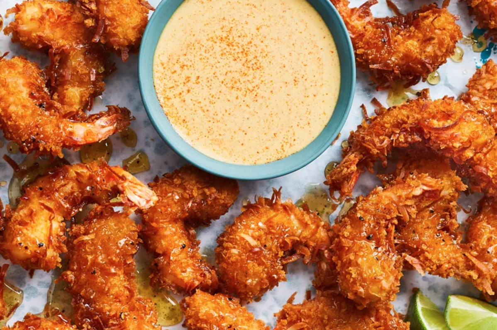

Mango-Habanero Aioli

Habanero chiles add their signature floral heat to this sweet and tangy mango aioli, which isn’t alarmingly hot thanks to plenty of citrus and and a touch of sugar.
Ingredients
- 1 cup frozen mango chunks
- 2 tbsp fresh lime juice
- 1 tsp granulated sugar
- 1 tsp smoked paprika
- 1 tsp curry powder
- 1 tsp smoked salt
- 1/2 tsp cayenne pepper
- 1/2 tsp black pepper
- 1 small habanero chile, seeded and chopped (aboutt 1/4 tsp)
- 1 cup mayonnaise
Steps
- Process frozen mango chunks, lime juice, sugar, smoked paprika, curry powder, smoked salt, cayenne pepper, black pepper, and chopped habanero in a food processor until smooth
- Stir together mango mixture and mayonnaise in a medium bowl
- Cover and refrigerate until ready to use